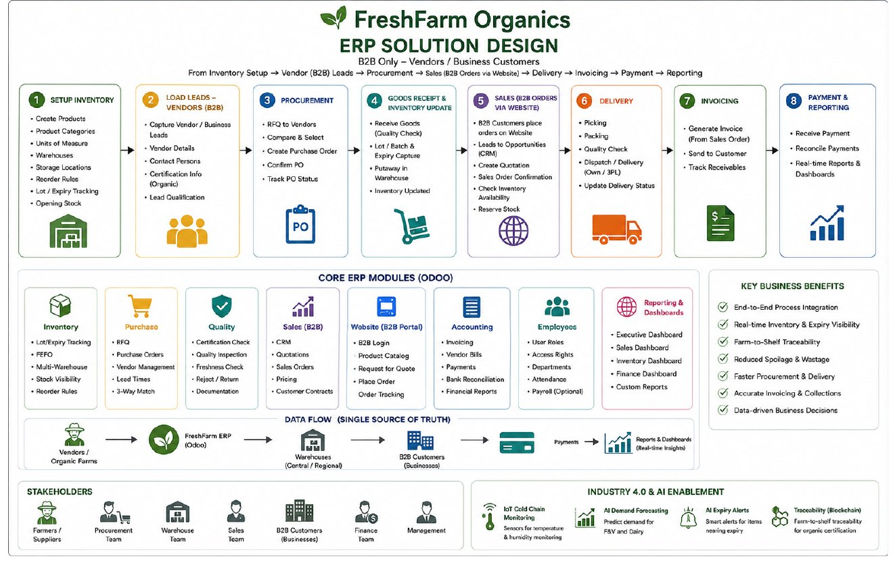
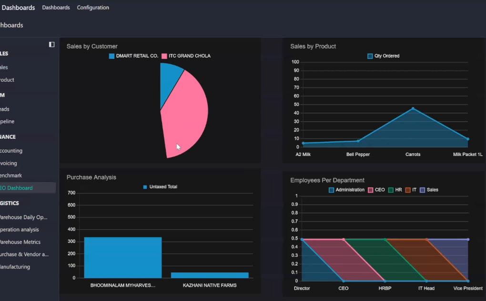

FreshFarm Organics ERP
An ERP consulting engagement for a B2B organic grocer: understand the business, model its processes, design the solution and run it in Odoo.
The challenge
Each team acted as an ERP consulting company for an assigned client and had to take it from business understanding to a working Odoo system. Ours was FreshFarm Organics, a certified-organic grocer that sells fruit, vegetables and dairy to businesses only: grocery chains, restaurants and wholesale traders. Buyers order through a web portal, choose cold-chain, standard or express transport, and pay 50% in advance and 50% on delivery.
That model makes the problems concrete. Produce spoils, dairy and leafy greens need an unbroken 2 to 8°C chain, every batch has to trace back to its farm and organic certificate, and a split payment is easy to get wrong when invoices are handled by hand.
How we approached it
- Understand the business. We wrote a company profile covering the business model, products, customers, suppliers, departments, challenges and growth objectives, and mapped each department to an ERP module.
- Model the processes. We drew three BPMN swim-lane models with role-by-role steps: Order-to-Cash, Procure-to-Pay with a quality gate on incoming goods, and a perishable-inventory process built on first-expiry-first-out (FEFO) allocation and batch traceability.
- Design the solution. We chose six Odoo modules (Purchase, Inventory, CRM, Sales, Employees and Accounting) and justified each against a problem from the profile. Manufacturing was left out of scope because the range is fruit, vegetables and dairy only.
- Run it in Odoo. We set up the company and its master data, then walked one full cycle on a live system: a lead in the CRM pipeline, a quotation, a confirmed sales order, delivery, a customer invoice and payment, followed by the profit and loss report and the dashboards. We recorded it as a demo video.
- Look ahead. We closed with three Industry 4.0 initiatives and three AI use cases, sequenced so the data is stable in Odoo before sensors and models are added.

What we delivered
| Deliverable | What it is | Where to find it |
|---|---|---|
| Company profile | Phase 1, 6 pages: business overview, products, customers, suppliers, departments, challenges and growth objectives. | Open the PDF |
| Process models | Phase 2, 6 pages: three BPMN diagrams with the steps for each department or role. | Open the PDF |
| ERP solution design | Phase 3, 1 page: the recommended Odoo modules, why each is needed and what is out of scope. | Open the PDF |
| Final presentation | 18 slides for the client's board: business, process flows, module design, eCommerce workflow, Industry 4.0 and AI. | Open the PDF |
| Odoo demo video | A five-minute screen recording of the configured system running one full cycle. | Available on request |

What we recommended
- Industry 4.0. IoT sensors for cold-chain monitoring, a blockchain ledger linking each batch to its farm and organic certificate, and RFID or barcode scanning to drive FEFO picking and stock accuracy.
- AI. Demand forecasting by product and season, expiry and spoilage alerts that prioritise near-dated lots, and vendor scoring from freshness and rejection history.
- Sequencing. Stabilise the data on Odoo first, then add IoT and AI where perishability, cold-chain and traceability risk are highest.
Tools
FreshFarm Organics is a simulated client assigned for a course exercise. Customer and vendor names in the demo data are illustrative, and this project is not affiliated with any real company.